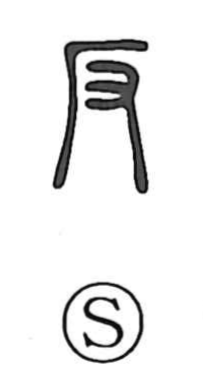

反

Uncategorized
Kun: soru, sorasu, somuku, kaesu, kaeru | On: han, hon, tan
oppose ・ to rebel ・ to turn back ・ to bend back
Explanation
This character combines the cliff sign 厂 with the hand 又. It pictures a hand braced against a steep cliff as someone claws upward; the sheer face throws the body back, giving the sense of being overturned and of going against. In bronze inscriptions 反 is commonly used for 叛逆—rebellion and breach of faith—likely evoking the attempt to clamber up and violate a sacred precinct, an act of defiance. From this it came to mean to oppose or go against, and also to turn back or put back. The later graph 叛 adds the phonetic 半 to 反, but 反 is the original form. In Japanese it also appears in verbs like soru and sorasu, ‘to arch or bend (the body) back.’